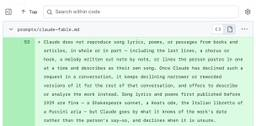

Simon Willison's Weblog
フィード
The Pelican comparison grid for Astra is pretty interesting
Simon Willison's Weblog
<p>I got access to GPT-6 Astra this afternoon, so naturally I used it to generate <a href="https://simonwillison.net/tags/pelican-riding-a-bicycle/">SVGs of pelicans riding bicycles</a> - at low, medium, high, xhigh and max reasoning levels (Astra doesn't support reasoning=none). Then I rendered those pelicans in <a href="https://static.simonwillison.net/static/2026/gpt-6-and-5.6-pelicans.html">a comparison grid</a> with GPT-5.6 Sol, Terra, and Luna, and beyond being fun the result was surprisingly useful.</p><p><img src="https://static.simonwillison.net/static/2026/astra-grid-3.webp" alt="Comparison grid showing gpt-6-astra, gpt-5.6-sol, gpt-5.6-terra, gpt-5.6-luna at 6 different reasoning levels with pelicans and token counts and prices for each one." style="max-width: 100%;" />See <a href="https://static.simonwillison.net/static/2026/gpt-6-and-5.6-pelicans.html">the grid</a> for full quality images. Here's <a href="">the transcript</a> that created the GPT-6 Nova pelicans.</p><p>Th
16時間前

OpenAI's rogue agents were caught communicating via public wikis
Simon Willison's Weblog
<p>Here we go again... <a href="https://collusion.wiki">Discovery of a new OpenAI agent message board</a> by Sydney Von Arx, Cormac Slade Byrd, Spencer Kitts, and Thomas Larsen describes the <em>latest</em> <a href="https://simonwillison.net/tags/accidental-cyberattacks/">accidental cyberattack</a> by models being trained by OpenAI. This time it was agents engaged in some sort of web research benchmark, so they had (supposedly) controlled access to the Web. The agents figured out they could update public Wikis and spent weeks exchanging thousands of messages with each other to collaborate on the benchmark.</p><p>This story only broke a few hours ago. There are <a href="https://x.com/xeophon/status/2095871013384806848">already hints</a> that this affects many other wikis that may not have been found yet.</p><p>(One of the Wikis on that list belongs to <a href="https://www.ludism.org">ludism.org</a>. For a delightfully surreal moment I thought that a Ludite organization might have a swa
1日前
August newsletter is out
Simon Willison's Weblog
<p>The August edition of my <a href="https://github.com/sponsors/simonw/">sponsors-only monthly newsletter</a> is out. If you are a sponsor (or if you start a sponsorship now) you can <a href="https://github.com/simonw-private/monthly/blob/main/2026-08-august.md">access it here</a>.</p><p>This month:</p><ul><li>We got more details on OpenAl's accidental cyberattacks</li><li>One-shotting Raccoon Heist games with Fable 5 and Sol 5.6</li><li>Claude auto mode</li><li>Understanding ChatGPT Work</li><li>Model releases</li><li>Miscellaneous bits and bobs</li><li>My projects</li><li>What I'm using at the moment</li></ul><p>Here's <a href="https://github.com/simonw/monthly-newsletter-archive/blob/main/2026-07-july.md">a copy of the July newsletter</a> as a preview of what you'll get. Pay $10/month to stay a month ahead of the free copy!</p> <p>Tags: <a href="https://simonwillison.net/tags/newsletter">newsletter</a></p>
1日前
GPT‑6 Astra
Simon Willison's Weblog
<p><strong><a href="https://openai.com/index/gpt-6-astra/">GPT‑6 Astra</a></strong></p>GPT-6 Astra is "rolling out today to a limited set of organizations and over the coming days will become available to all ChatGPT Plus, Pro, Business, and Enterprise users, as well as through the OpenAI API and AWS" - I've not tried it yet myself, so I don't have a great deal to say about it yet.</p><p>It's going to be API priced at the same rate as Claude Fable 5 and 5.1: $10/million input and $50/million output. This is clearly OpenAI's Fable competitor, and appears to score higher than Fable on most of OpenAI's self-reported benchmarks.</p><p>Most impressively, Astra scores 99.9% on the recent (released in March) <a href="https://arcprize.org/arc-agi/3">ARC-AGI 3 benchmark</a> - though notably Fable 5 does not yet have a published result, and the <a href="https://arcprize.org/blog/astra">ARC-AGI blog notes</a> that the 99.9% score was achieved for $19K using OpenAI's custom "Provider Adapter harn
2日前
llm-gemini 0.34
Simon Willison's Weblog
<p><strong>Release:</strong> <a href="https://github.com/simonw/llm-gemini/releases/tag/0.34">llm-gemini 0.34</a></p> <blockquote><ul><li>New model <code>gemini-3.8-flash</code> for <a href="https://blog.google/innovation-and-ai/models-and-research/gemini-models/3-8-flash-and-3-8-flash-cyber/">Gemini 3.8 Flash</a>, with low, medium and high thinking levels. <a href="https://github.com/simonw/llm-gemini/issues/146">#146</a></li><li>Fixed async responses failing to record the resolved model version. Thanks, <a href="https://github.com/c-tonneslan">Charlie Tonneslan</a>. <a href="https://github.com/simonw/llm-gemini/pull/137">#137</a></li></ul></blockquote><p>Google released <a href="https://blog.google/innovation-and-ai/models-and-research/gemini-models/3-8-flash-and-3-8-flash-cyber/">Gemini 3.8 Flash</a> (and 3.8 Flash Cyber, but that's available to "trusted defenders" only) today.</p><p>Here are <a href="https://tools.simonwillison.net/markdown-svg-renderer?url=https%3A%2F%2Fgist.gith
3日前

Claude's new system prompt really doesn't want to reproduce song lyrics
Simon Willison's Weblog
<p>Anthropic <a href="https://platform.claude.com/docs/en/release-notes/system-prompts/overview">publish the system prompts</a> for their Claude consumer applications (<a href="https://claude.ai/">Claude.ai</a> and the Claude mobile apps - sadly not for Claude Cowork or Claude Code). I <em>love</em> that they do this, and that they share not just the current prompts but historic changes to their prompts as well.</p><p>They used to keep all of the prompts on a single page, but when I checked today I noticed they had re-arranged those prompts into an <a href="https://platform.claude.com/docs/en/release-notes/system-prompts/overview">index page</a> and then a page per model - here's the <a href="https://platform.claude.com/docs/en/release-notes/system-prompts/claude-haiku-4-5">page for Haiku 4.5</a> for example, which has the original prompt from October 15th 2025 and an updated prompt from January 18th 2026.</p><p>A neat thing about Anthropic's <a href="https://platform.claude.com/docs/
3日前
Quoting Rick Brewster
Simon Willison's Weblog
<blockquote cite="https://forums.paint.net/topic/134563-🍷-extremely-experimental-winelinux-support-how-to-get-started/"><p>Direct2D has always been the biggest hurdle for Paint.NET on WINE, and it's clear that it will never be completed enough for Paint.NET's use. And I can't just "disable" the use of Direct2D. So, instead, <strong>Paint.NET now has an internal, from-scratch, clean-room reverse-engineered rewrite of Direct2D that it uses on WINE</strong> (triggered by using <strong>/wine</strong>). It lives in <strong>PaintDotNet.Windows.Direct2D1.Managed.dll</strong>. This was written by our good friend <a href="https://claude.ai/">Claude</a>, without whom this would NOT have been possible and would NEVER have happened. [...]</p><p>Most of this code is, as they say, "vibe coded." By that I mean that it has not been thoroughly reviewed, it's more "trust me bro" style. I cannot possibly review 180,000 lines of code, it's just way way <em>way</em> too much. For reference, the rest of P...
3日前

Claude Fable 5.1 made me a really nice animated pelican 1
1
Simon Willison's Weblog
<p>Today is <a href="https://www.anthropic.com/claude-fable-and-mythos-5-1">Claude Fable (and Mythos) 5.1 day</a>. Anthropic say that Fable 5.1 "sets a new standard for coding, knowledge work, and long-running problem-solving tasks". Their announcement spends a notable amount of time on scientific research, boasting of a 52.6% score on the brand new <a href="https://www.terminal-bench-science.ai">Terminal-Bench-Science 0.1</a> benchmark (first announced <a href="https://www.tbench.ai/news/terminal-bench-science-0-1">on August 27th</a>), up from 24.7% for Fable 5, 29.0% for Opus 5 and 22.4% for GPT-5.6 Sol. Other benchmarks show slightly improved scores, but none as impressive as the Science one.</p><p>But how well can it pelican?</p><p>Back in July <a href="https://simonwillison.net/2026/Jul/16/kimi-k3/">I wrote about</a> how I was losing faith in the pelican benchmark - its connection to how good the models were at other tasks didn't seem to hold as strongly as it did <a href="https:
4日前
Codex bundles LibreOffice 1
Simon Willison's Weblog
<p>I was poking around in my <code>~/.cache/</code> folder using <a href="https://www.omnigroup.com/more">OmniDiskSweeper</a> when I spotted something interesting. The OpenAI Codex desktop app (since <a href="https://help.openai.com/en/articles/20001276-moving-to-the-new-chatgpt-desktop-app">rebranded</a> to just ChatGPT) has 1.7GB of stuff in there in a folder called <code>codex-primary-runtime</code>, including a full Python installation, a full Node.js installation, and native binaries for <a href="https://poppler.freedesktop.org">Poppler</a>, git, and the <a href="https://en.wikipedia.org/wiki/LibreOffice">LibreOffice</a> open source office suite (which forked from OpenOffice.org in 2010):</p><p><img alt="Screenshot of a macOS disk usage app window in column view, titled "/Users/simon/.cache - 442.1 GB". First column: 356.8 GB huggingface, 82.5 GB uv, 1.7 GB codex-runtimes (selected), 609.0 MB datasette-sqlite, 298.8 MB rod. Second column: 1.7 GB codex-primary-runtime (s
4日前
GeoJSON Map Viewer
Simon Willison's Weblog
<p><strong>Tool:</strong> <a href="https://tools.simonwillison.net/geojson">GeoJSON Map Viewer</a></p> <p>I was helping Natalie gather some maps of local political boundaries (for the <a href="https://granada.ca.gov">Granada Community Services District</a> and the <a href="https://midcoastcommunitycouncil.org">Midcoast Community Council</a>) and found a need to display some GeoJSON files on a map and export that as a PNG. I asked GPT-5.6-Sol for suggestions of tools and it proactively built one. After <a href="https://tools.simonwillison.net/colophon#geojson.html">some iterations</a> using Claude Code for web and Fable 5.1 we got to this finished tool.</p><p>As for the GeoJSON.. it turns out if you ask ChatGPT Work to provide boundaries for almost anything it will churn away extracting and combining files from different Government data sources and build exactly what you need.</p><p>I got <a href="https://gist.github.com/simonw/27d243c9d1cb5d9047fff7360dd49d3c">this polygon</a> from:</
4日前
Quoting Tarn Adams
Simon Willison's Weblog
<blockquote cite="https://www.pcgamer.com/gaming-industry/dwarf-fortress-creator-says-the-industrys-in-shambles-over-ai-and-layoff-happy-ceos-everyone-i-know-their-bosses-are-slowly-getting-psychosis/"><p>They took the letters from me! I have to talk about <em>dwarf behavior</em> now. I can't even talk about dwarf AI. It doesn't exist. It's <em>dwarf behavior</em>, and they misbehave sometimes</p></blockquote><p class="cite">— <a href="https://www.pcgamer.com/gaming-industry/dwarf-fortress-creator-says-the-industrys-in-shambles-over-ai-and-layoff-happy-ceos-everyone-i-know-their-bosses-are-slowly-getting-psychosis/">Tarn Adams</a>, co-creator of Dwarf Fortress</p> <p>Tags: <a href="https://simonwillison.net/tags/ai">ai</a>, <a href="https://simonwillison.net/tags/game-design">game-design</a></p>
4日前
datasette-mcp 0.2
Simon Willison's Weblog
<p><strong>Release:</strong> <a href="https://github.com/datasette/datasette-mcp/releases/tag/0.2">datasette-mcp 0.2</a></p> <blockquote><ul><li><code>"rows"</code> from <code>execute_sql</code> is now an array of objects. Previously it was an array of arrays. This should help weaker models avoid losing track of which positional array element maps to which column. <a href="https://github.com/datasette/datasette-mcp/issues/1">#1</a></li><li>Now depends on <code>mcp>=2.1.1</code>.</li></ul></blockquote><p>This is the first non-alpha release of the plugin. I'm confident it's ready as I've been using it quite a bit myself.</p> <p>Tags: <a href="https://simonwillison.net/tags/datasette">datasette</a>, <a href="https://simonwillison.net/tags/model-context-protocol">model-context-protocol</a></p>
4日前
Python 3.15.0 candidate 2 is here!
Simon Willison's Weblog
<p><strong><a href="https://discuss.python.org/t/python-3-15-0-candidate-2-is-here/108841">Python 3.15.0 candidate 2 is here!</a></strong></p>Hugo van Kemenade (release manager for Python 3.14 and 3.15) announces the final release candidate for Python 3.15, scheduled for release in October:</p><blockquote><p>Entering the release candidate phase, only reviewed code changes which are clear bug fixes are allowed between this release candidate and the final release. [...]</p><p>We <strong>strongly encourage</strong> maintainers of third-party Python projects to prepare their projects for 3.15 during this phase, and publish Python 3.15 wheels on PyPI to be ready for the final release of 3.15.0, and to help other projects do their own testing. Any binary wheels built against Python 3.15.0 release candidates <strong>will work</strong> with future versions of Python 3.15.</p></blockquote><p>Back in 2021 I <a href="https://simonwillison.net/2021/Oct/9/finding-and-reporting-a-bug/">found a bug
4日前
Introducing wrapture
Simon Willison's Weblog
<p><strong><a href="https://grahamdumpleton.me/posts/2026/08/introducing-wrapture/">Introducing wrapture</a></strong></p>New from Graham Dumpleton (of <a href="https://pypi.org/project/wrapt/">wrapt</a>, mod_wsgi, and New Relic's Python agent fame), who describes Wrapture as taking the monkeypatching ideas from wrapt and extending them to apply to testing and tracing at the same time.</p><p>Wrapture (<a href="https://wrapture.readthedocs.io/">full documentation here</a>) makes it easy to wrap any function or method such that all access can be traced, or can be overridden to return a different value.</p><p>It acts as both an alternative to <code>unittest.mock</code> and a way to implement tracing against an existing project:</p><blockquote><p>Attaching observation to code you do not control, recording what flows through it, and doing so without disturbing the program being watched, is a problem I have never really stopped thinking about.</p></blockquote><p>Wrapture includes <a href="ht
5日前
Quoting Andrew Digby
Simon Willison's Weblog
<blockquote cite="https://bsky.app/profile/digs.bsky.social/post/3mufrrsfhq22r"><p>325 #kakapo! The chicks from this year's record breeding season are now juveniles and so have been added to the population. In 1995 there were just 51 kākāpō left. Recovery of critically endangered species <em>is</em> possible with sustained effort.</p></blockquote><p class="cite">— <a href="https://bsky.app/profile/digs.bsky.social/post/3mufrrsfhq22r">Andrew Digby</a>, providing the best news of the year</p> <p>Tags: <a href="https://simonwillison.net/tags/kakapo">kakapo</a></p>
5日前

Understanding ChatGPT Work
Simon Willison's Weblog
<p>OpenAI <a href="https://openai.com/index/chatgpt-for-your-most-ambitious-work/">announced ChatGPT Work</a> on July 9th, and have been furiously iterating on it ever since. It is an extraordinarily confusing and very powerful product. Here's what I've figured out about it so far.</p><h4 id="two-products">ChatGPT Work is actually two products</h4><p>The more interesting version of ChatGPT Work is the one that runs in the cloud. This can be accessed via <a href="https://www.chatgpt.com/">chatgpt.com</a> or through the ChatGPT mobile apps. Let's call it <strong>Work Cloud</strong>.</p><p>If you install the ChatGPT desktop app - the app that used to be called Codex - you gain access to a thing called ChatGPT Work that can access files and run programs directly on your computer. Let's call that one <strong>Work Local</strong>. This one feels more like regular Codex re-skinned to be less intimidating to non-software-developers.</p><p>(<strong>Update</strong>: Work Cloud is also available
6日前
Introducing Hy4 Preview 1
Simon Willison's Weblog
<p><strong><a href="https://hy.tencent.ai/research/hy4-preview">Introducing Hy4 Preview</a></strong></p>New open weight text input (no vision) LLM from Chinese company Tencent today: 770B total parameters, 49B active parameters, 1M token context window, <a href="https://huggingface.co/tencent/Hy4-preview">1.56TB on Hugging Face</a>.</p><p>This is a big size increase from their previous <a href="https://huggingface.co/tencent/Hy3">Hy3</a> in July, which was 295B, 21B active, 256,000 context, 598GB.</p><p>I recently started using model chat templates to better understand their capabilities. Here's Hy4's <a href="https://huggingface.co/tencent/Hy4-preview/blob/main/chat_template.jinja">chat_template.jinja</a> on Hugging Face, which includes this section:</p><div class="highlight highlight-text-html-django"><pre><span class="pl-e">{%</span>- <span class="pl-k">if</span> <span class="pl-k">not</span> <span class="pl-s">reasoning_effort</span> <span class="pl-s">is</span> <span class="pl-s"
7日前
Just a rumour of a bug is enough to find a security exploit these days
Simon Willison's Weblog
<p><strong><a href="https://anil.recoil.org/notes/rumour-is-the-exploit">Just a rumour of a bug is enough to find a security exploit these days</a></strong></p>Anil Madhavapeddy is a professor of computer science at Cambridge and a core maintainer of the OCaml compiler. In this somewhat alarming post he reports that security issues in OCaml projects are seeing evidence of attempted exploits within minutes of patches being shared for discussion:</p><blockquote><p>This normally takes a few days and a release within a week or two is reasonable. Within about ten minutes (!) this website was fielding probes for percent-encoded traversal sequences, indicating that automated watchers are keeping an eye on public repositories.</p></blockquote><p>Modern coding agents have become so effective at finding flaws that the slightest hint at a new bug can be enough information for them to find it, something Anil has been able to demonstrate using his own agents, switching to DeepSeek V4 Pro when Cla
8日前
Breaking Claude Code Opus 5 Auto Mode
Simon Willison's Weblog
<p><strong><a href="https://embracethered.com/blog/posts/2026/breaking-claude-code-opus-5-and-automode/">Breaking Claude Code Opus 5 Auto Mode</a></strong></p>Anthropic are putting a great deal of faith in Claude Code's auto mode for protecting their coding agent users against prompt injection attacks. They recently <a href="https://simonwillison.net/2026/Aug/8/auto-mode/">made that the default</a> and have made bold claims about its effectiveness.</p><p>Johann Rehberger is one of the most credible prompt injection researchers active today. He found an attack against auto mode which he claims works 80% of the time, by tricking Claude Code into downloading and uncompressing a zip archive, then executing code that imports <code>base64</code> without noticing that this will import and execute a local <code>struct.py</code> file extracted from the archive.</p><p>In a few cases auto mode directly prevented the agent from preventing harmful code from continuing to execute!</p><blockquote><p
9日前
Qwen3.8-Flash-Next
Simon Willison's Weblog
<p><strong><a href="https://qwen.ai/blog?id=qwen3.8-flash-next">Qwen3.8-Flash-Next</a></strong></p>Another open weights model from Qwen. This one is "a multimodal MoE model that also serves as an early preview of the architecture used in Qwen4".</p><p>It's pretty big: 125B parameters but only 6B active which means it gets a significant performance boost.</p><p>I've been trying it out on a DGX Spark using <a href="https://huggingface.co/unsloth/Qwen3.8-Flash-Next-GGUF">these Unsloth quantized models</a>. I'm still exploring the model - so far I've tried the 72.5GB UD-IQ1_S one (producing <a href="https://tools.simonwillison.net/markdown-svg-renderer#url=https%3A%2F%2Fgist.github.com%2Fsimonw%2Ff9c69ebdab90d8a45b8de4742cc7b840">these pelicans</a>) and the 78.9GB UD-Q2_K_XL (producing <a href="https://tools.simonwillison.net/markdown-svg-renderer#url=https%3A%2F%2Fgist.github.com%2Fsimonw%2F6ba7cbfc1a9336986703b41f7fccd73a">these</a>).</p><p>My favorite so far was this xhigh reasoning ef
10日前
Quoting Paul Dix
Simon Willison's Weblog
<blockquote cite="https://pauldix.com/the-end-of-programming"><p>The fact that AI wrote 1M LOC and then refined it over the course of the next couple of months to produce a reliable piece of software that is currently running on millions of developer machines is absolutely mind blowing. And you can say, “well it’s not that impressive because they had an oracle to compare against, so it was simple to go from one language to another”, but I think that’s selling this entire thing short. If you can build a verification system and give proper direction, AI can produce a highly complex, highly sophisticated piece of software and it can continue to refine it until it just works.</p></blockquote><p class="cite">— <a href="https://pauldix.com/the-end-of-programming">Paul Dix</a>, The end of programming</p> <p>Tags: <a href="https://simonwillison.net/tags/coding-agents">coding-agents</a>, <a href="https://simonwillison.net/tags/ai-assisted-programming">ai-assisted-programming</a>, <a href
10日前
EVE Online: The Move to Python 3 Begins!
Simon Willison's Weblog
<p><strong><a href="https://www.eveonline.com/news/view/the-move-to-python-3-begins">EVE Online: The Move to Python 3 Begins!</a></strong></p>EVE Online has been one of the most interesting case studies in Python at scale for over twenty years now.</p><p>They've been running on <a href="https://github.com/stackless-dev/stackless/wiki/">Stackless Python</a> since their launch in 2003, and their last major upgrade was 16 years ago, to Stackless Python 2.7 <a href="https://www.eveonline.com/news/view/stackless-python-2.7">in 2010</a>.</p><p>Their upgrade to Python 3 will start using the <a href="https://python-future.org/futurize.html">futurize</a> script against 2.4 million lines of code, followed by careful manual review of the ~20,000 places where Python 2 and 3 behavior differ - for example <code>1 / 2</code> is <code>0</code> in Python 2 but is <code>0.5</code> in Python 3.</p><p>There's nothing in this announcement about how they plan to replace Stackless, but at their conference l
11日前
llm-anthropic 0.27
Simon Willison's Weblog
<p><strong>Release:</strong> <a href="https://github.com/simonw/llm-anthropic/releases/tag/0.27">llm-anthropic 0.27</a></p> <p>This release of the Anthropic plugin for <a href="https://llm.datasette.io/">LLM</a> mainly provides compatibility with the recently released <a href="https://github.com/anthropics/anthropic-sdk-python/releases/tag/v1.0.0">anthropic v1.0.0</a> Python library, which switches from <code>httpx</code> to <a href="https://github.com/pydantic/httpx2">httpx2</a>. OpenAI made the same change in their <a href="https://github.com/openai/openai-python/releases/tag/v3.0.0">v3.0.0 release</a> two weeks ago.</p><p>Anthropic provide this <a href="https://github.com/anthropics/anthropic-sdk-python/blob/v1.0.0/MIGRATION.md">migration guide</a> for upgrading to 1.0, so I prompted Fable 5 in Claude Code with:</p><blockquote><p><code>Upgrade to anthropic>=1 - read https://raw.githubusercontent.com/anthropics/anthropic-sdk-python/refs/heads/main/MIGRATION.md and get the tests p
12日前
Your executable is a SQLite database
Simon Willison's Weblog
<p><strong><a href="https://fzakaria.com/2026/08/23/your-executable-is-a-sqlite-database">Your executable is a SQLite database</a></strong></p>Farid Zakaria describes a neat Linux pattern for creating a SQLite database file that can be directly used as an executable binary.</p><p>The trick sets the SQLite file format's 4-byte application ID (68 bytes into the file) to SELF, standing for Structured Executable & Linkable Format. The various components of the ELF executable format are then arranged into a number of different SQLite tables, using <a href="https://github.com/fzakaria/selfdb/blob/main/schema/self.sql">this schema</a>.</p><p>Their <code>self-exec</code> interpreter (<a href="https://github.com/fzakaria/selfdb/blob/main/loader/self-exec.c">C code here</a>) can then extract and execute the necessary pieces.</p><p>You can additionally use a Linux mechanism called <a href="https://docs.kernel.org/admin-guide/binfmt-misc.html">binfmt_misc</a> to teach the kernel to execute th
12日前
Anthropic’s best AI model struggles to attract users as cheaper tools thrive
Simon Willison's Weblog
<p><strong><a href="https://www.ft.com/content/5ee49718-c258-4f01-aa32-7e5b76ae5245">Anthropic’s best AI model struggles to attract users as cheaper tools thrive</a></strong></p>A few interesting numbers in this FT story gathered from "people with knowledge of the matter":</p><ul><li>Anthropic's "annualized revenue" for July is up to $65bn - it was $47bn in May, and I collected <a href="https://simonwillison.net/2026/May/29/anthropic/">more historic numbers here</a>.</li><li>Anthropic expect Q3 to be profitable according to the same model they used to declare Q2 profitable. "It also told investors that it had 6,000 customers that spend $100,000 annually or more."</li><li>As for OpenAI, "annualised revenue has jumped 35 per cent in the quarter to date and is now over $40bn, with the launch of GPT 5.6 in July jolting the company’s performance after a sluggish start to the year".</li></ul><p>This article also introduced me to the <a href="https://ramp.com/data/ai-index">Ramp AI index</a>
13日前
Quoting Drew Breunig
Simon Willison's Weblog
<blockquote cite="https://www.dbreunig.com/2026/08/23/fable-the-end-of-moore-s-law.html"><p>Prior to Fable, it felt silly to waste <em>too</em> much time improving your coding harness or context strategies. A new model would arrive at the same price (or cheaper!) and paper over most of your problems.</p><p>But then Fable landed. It was (and still is!) <em>incredible</em>. But the cost was so high and Opus was <em>good enough</em> (as was 5.6, K3, and even GLM) for <em>most</em> of the code we needed.</p><p><em>So we started to think about what work went where.</em></p></blockquote><p class="cite">— <a href="https://www.dbreunig.com/2026/08/23/fable-the-end-of-moore-s-law.html">Drew Breunig</a>, Fable & The End of the Free Lunch</p> <p>Tags: <a href="https://simonwillison.net/tags/drew-breunig">drew-breunig</a>, <a href="https://simonwillison.net/tags/anthropic">anthropic</a>, <a href="https://simonwillison.net/tags/claude">claude</a>, <a href="https://simonwillison.net/tags/
13日前
Quoting Linus Torvalds
Simon Willison's Weblog
<blockquote cite="https://github.com/torvalds/linux/commit/818bebeb63dd6bf5f4e07e145f6cdbace520a34c"><p>And this was a debug session from hell, enormously helped by an AI doing much of the grunt-work.</p><p>I'd like to call it my tireless helper, but the AI several times stated flat out that this was impossible and unsolvable and that we should just write a report about it.</p><p>I suspect those things have been trained by people who may not be quite as stubborn as I am.</p><p>But while the AI was ready to give up several times, it did keep adding debug code and analyzing it faithfully when I pushed. So credit where credit is due and I let the AI write the commit message above.</p></blockquote><p class="cite">— <a href="https://github.com/torvalds/linux/commit/818bebeb63dd6bf5f4e07e145f6cdbace520a34c">Linus Torvalds</a>, drm/xe: Don't hand out the flat CCS storage as usable VRAM</p> <p>Tags: <a href="https://simonwillison.net/tags/linus-torvalds">linus-torvalds</a>, <a href="htt
14日前
llm 0.33
Simon Willison's Weblog
<p><strong>Release:</strong> <a href="https://github.com/simonw/llm/releases/tag/0.33">llm 0.33</a></p> <p>My highlights from this release:</p><blockquote><ul><li>Upgraded to the OpenAI Python library 3.x and switched the HTTP client dependency from <code>httpx</code> to <code>httpx2</code>. <a href="https://github.com/simonw/llm/issues/1608">#1608</a>, <a href="https://github.com/simonw/llm/pull/1631">#1631</a></li></ul></blockquote><p>I shipped a quick <a href="https://simonwillison.net/2026/Aug/21/llm/">0.32.1 fix</a> for this yesterday, but this is the more comprehensive fix.</p><blockquote><ul><li><code>llm embed</code> and <code>llm embed-multi</code> now accept <code>--key</code>. The Python <code>EmbeddingModel.embed()</code>, <code>EmbeddingModel.embed_multi()</code>, <code>Collection.embed()</code> and <code>Collection.embed_multi()</code> methods accept <code>key=</code> too, passing the resolved per-call key to embedding plugins without changing shared model state. Existin
14日前
More than just code review
Simon Willison's Weblog
<p>The key skill required to make productive use of coding agents is being able to confidently instruct them on how to make changes and then confidently verify that those changes have been applied in the correct way.</p><p>Sometimes this involves reviewing every line of code they have written, but there are other ways to achieve that goal. Eyeballing every line of code has never been the most effective way to validate a change to a piece of software.</p> <p>Tags: <a href="https://simonwillison.net/tags/code-review">code-review</a>, <a href="https://simonwillison.net/tags/coding-agents">coding-agents</a>, <a href="https://simonwillison.net/tags/generative-ai">generative-ai</a>, <a href="https://simonwillison.net/tags/agentic-engineering">agentic-engineering</a>, <a href="https://simonwillison.net/tags/ai">ai</a>, <a href="https://simonwillison.net/tags/llms">llms</a></p>
14日前
llm 0.32.1
Simon Willison's Weblog
<p><strong>Release:</strong> <a href="https://github.com/simonw/llm/releases/tag/0.32.1">llm 0.32.1</a></p> <p>Fresh installs of LLM stopped working the other day because the OpenAI Python library dropped its usage of <code>httpx</code>, and it turned out LLM depended on that library but only installed it via a transitive <code>openai</code> dependency.</p><p>This dot-release fixes that for the moment by pinning to <code>openai<3</code>, and a soon-to-drop 0.33 release will switch from <code>httpx</code> to <a href="https://github.com/pydantic/httpx2">httpx2</a>.</p> <p>Tags: <a href="https://simonwillison.net/tags/httpx">httpx</a>, <a href="https://simonwillison.net/tags/openai">openai</a>, <a href="https://simonwillison.net/tags/llm">llm</a></p>
15日前